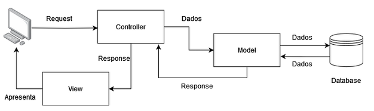
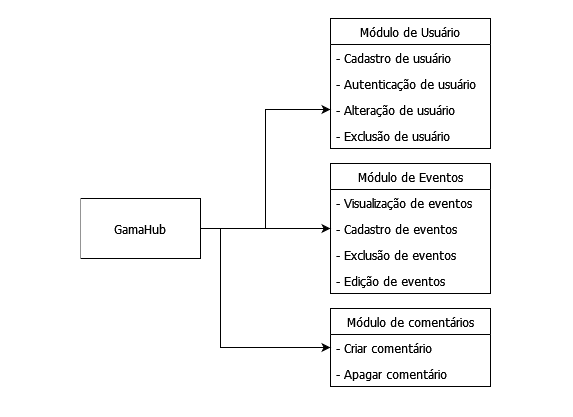
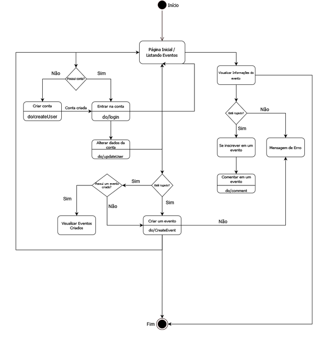
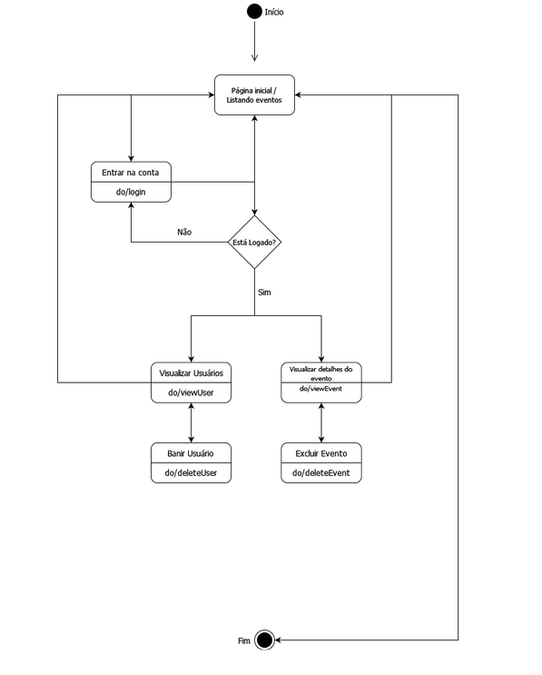
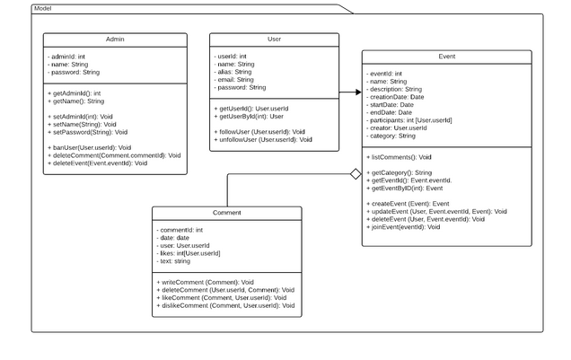
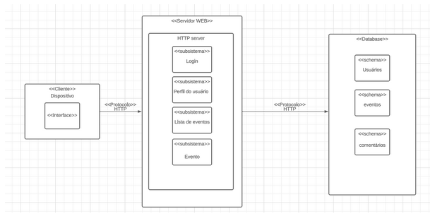

Documento de Arquitetura v0.1
Histórico de Revisão
Versão 0.1
- Data: 03/11/2023
- Autores: Rodrigo, João Pedro, Manoel, Mateus
- Primeiras definições de escopo.
Autores
| Matrícula | Nome | Descrição do papel assumido na equipe | % de contribuição ao trabalho (*)[^1] |
| 170161951 | Eduardo Rodrigues Levenhagem | 16.5% | |
| 211063022 | Rodrigo Wendrel Ferreira | Scrum Master | 16.5% |
| 190058048 | Lara Giuliana Lima dos Santos | 16.5% | |
| 200023535 | Manoel Castro Moura Filho | 16.5% | |
| 200024825 | Mateus Santos Negrini | 16.5% | |
| 211061940 | João Pedro Ferreira Alves | 16.5% |
1. Introdução
1. Propósito
Providenciar uma plataforma para aqueles interessados em participar de eventos ou grupos no FGA possam se encontrar e se comunicar, além de poderem cadastrar seus próprios evento
1.2 Escopo
O software se trata de uma aplicação web com o objetivo de permitir a integração dos alunos da Faculdade Gama por meio de atividades sociais que são anunciadas via aplicação.
2. Representação Arquitetural
2.1 Definições
O sistema seguirá uma arquitetura MVC, onde a aplicação é dividida em três camadas: Model, View e Controller. A camada Model (Modelo) é responsável pela manipulação de dados, a camada View é a camada por onde o usuário irá interagir com a aplicação, por fim, a camada Controller é responsável por conectar a Model e a View, repassando as requisições da View para a Model, e repassando os resultados da Model para a View.
2.2. Justifique sua escolha.
Escolhemos o MVC devido a sua modularização permitindo o desenvolvimento simultâneo de diversas partes do software além de oferecer flexibilidade para evoluir a aplicação já que, as alterações na Model não afetam a View e vice-versa, permitindo assim, uma manutenção mais simplificada.
2.3 Detalhamento
Imagem 1: Diagrama de funcionamento da arquitetura MVC

2.4 Metas e restrições arquiteturais
As metas e restrições são definidas para guiar o time de desenvolvimento para entregar um produto de qualidade dentro do escopo. Nas tabelas abaixo estão registradas as metas e restrições assumidas pela equipe no projeto.
Tabela 1: Metas
| Metas | Descrição |
| Atuação | capacidade de 100 usuários simultâneos. |
| Segurança e confiabilidade | Verificar se um usuário já foi cadastrado. |
| Segurança e confiabilidade | Não permitir que um usuário faça login em uma conta que não lhe pertence. |
| Segurança e confiabilidade | Sistema de autenticação de e-mail. |
| Segurança e confiabilidade | Permitir a exclusão de posts somente por parte do autor ou do administradores. |
| Manutenção | Cada módulo deve ser independente de modo que seja possível alterar um sem necessariamente alterar toda a aplicação. |
| Manutenção | O site deve estar disponível para uso 24h por dia. |
Tabela 2: Restrições
| Restrições | Descrição |
| Responsividade | A aplicação deve ser adaptável e oferecer uma experiência consistente em todas as variedades de telas de smartphones. |
| Acessibilidade | A aplicação deve ter utilização intuitiva e simples. |
| Idioma | A aplicação deve ser desenvolvida para o idioma português do Brasil. |
| Plataforma | A aplicação será utilizada em navegadores web modernos e atualizados. |
| Internet | O usuário deverá estar conectado para utilizar a aplicação. |
2.5 Visão de Casos de uso (escopo do produto)
A aplicação visa facilitar a criação e divulgação de eventos na Faculdade do Gama, assim gerando maior interação dentro do campus. A aplicação web foi proposta para utilização por três perfis diferentes, o visitante, que acessa o site sem login, o usuário, que utiliza o site logado e o administrador, que possui poderes de curadoria em todo o site. Os visitantes podem visualizar os eventos disponíveis, os usuários podem criar e interagir com eventos, os administradores podem fazer tudo o que os usuários podem, além de banir usuários e deletar eventos ou comentários.
2.6 Visão lógica
Imagem 2: Diagrama de módulos

Imagem 3: Diagrama de Estados(Usuário / Visitante)

Imagem 4: Diagrama de Estados(Administrador)

Imagem 5: Diagrama de Classes

2.7 Visão de Implementação
Tabela 3 - Visão de Implementação
| Visão de Implementação - Lógica de negócios e Regras de Negócio |
| Administradores podem excluir perfis de usuário, postagens no fórum ou eventos que violem os Termos de Uso da aplicação *(Tabela de Regras Gerais). |
| Cada perfil de usuário terá um login com senha, tendo seu e-mail verificado; Usuários sem um perfil criado poderão apenas visualizar, mas não interagir com os dados da aplicação. |
| Cada usuário será capaz de fazer postagens no fórum, além de poder cadastrar eventos e endossar comentários com curtidas |
| O perfil de visitante não terá permissão para fazer postagens nem qualquer tipo de interações, apenas visualizar |
2.8 Visão de Implantação

- Front-end React: será implementado o front-end usando React, que será servido por meio de um servidor web Node.js. Será distribuído em servidores na nuvem
- Back-end Node.js: Nosso servidor Node.js atuará como a camada back-end
- Banco de Dados: O MongoDB, por conta de sua simplicidade de uso e aprendizado, será nosso banco de dados principal para armazenar e gerenciar os dados da aplicação web. Utilizaremos um cluster MongoDB gerenciado em um servidor na nuvem para garantir alta disponibilidade
2.9 Visão de Implantação
- É necessário o uso de um email da instituição ( UnB) para criação de conta e utilização da aplicação.
3. Bibliografia
HIRAMA, Kechi. Engenharia de Software: Qualidade e Produtividade com Tecnologia. Rio de Janeiro: GEN LTC, 2011. 232 p.
KOSCIANSKI, André; SOARES, Michel dos Santos. Qualidade de Software - 2ª edição: Aprenda as metodologias e técnicas. São Paulo: Novatec Editora, 2007. 395 p.